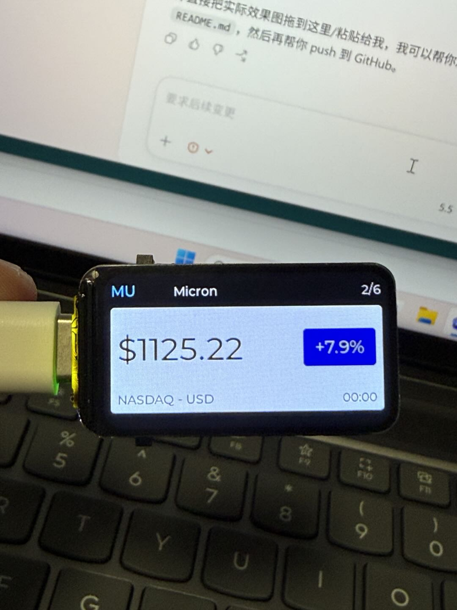

ESP32 / LVGL / Cloudflare
ESP32 Stock Ticker
一个基于 Waveshare ESP32-S3-LCD-1.47B 的美股小屏项目，支持启动页、WiFi 引导连接、网页配置 setup mode、股票轮播和稳定代理刷新。
Display
1.47 inch LCD
Controls
2 buttons + RGB LED
Config
Hotspot + browser setup
Network
WiFi + proxy architecture
What it solves: 把“能显示价格”的 demo，做成了“能稳定启动、能自动联网、能失败恢复”的小设备。
What I learned: 真正的产品感，来自启动流程、配置流程和恢复机制，而不只是功能本身。